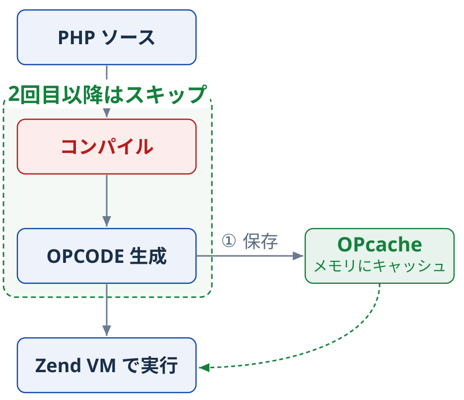
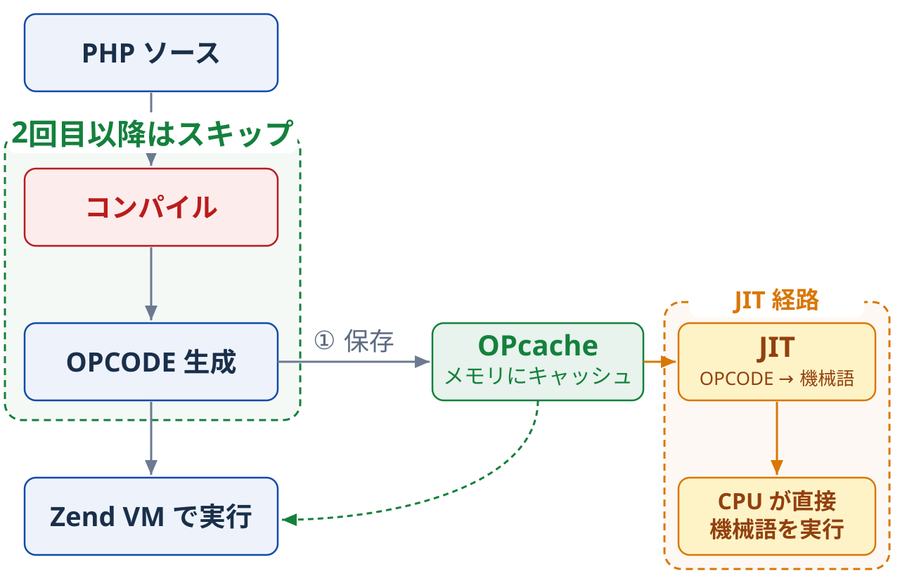
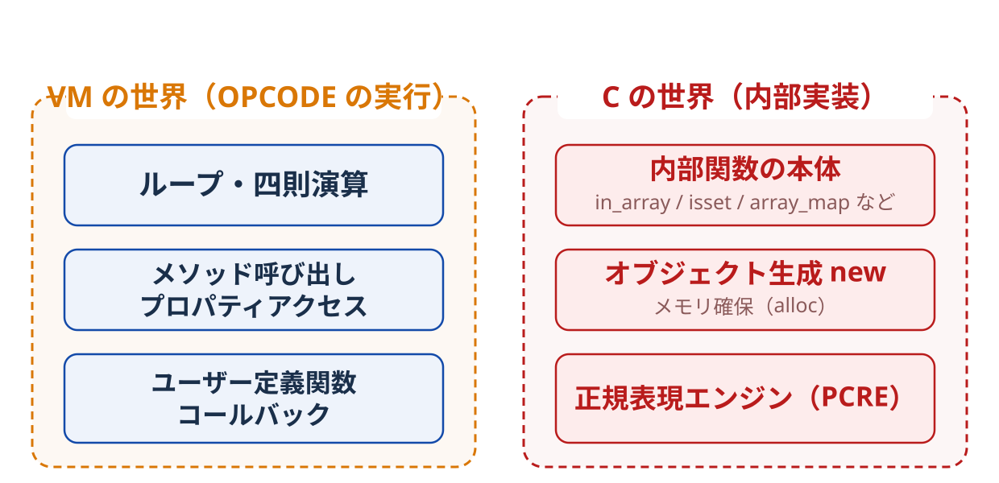

1. OPcache の
効果計測
PHP の処理の流れ概要図
OPcache の効くところ
まずは OPcache がどこに効いて
どこまで速くなるのか
作って・測って・確かめてみる
計測環境
| 実行基盤 | Docker コンテナ（php:8.5-fpm-bookworm ） |
| PHP | 8.5 |
| フレームワーク | Laravel 13.14 |
| 計測ライブラリ | PHPBench 1.7 |
OPcache の効くところはシンプル
効果はコード量（コンパイル対象の規模）
にほぼ比例
↑効果あり：大量のクラス/ファイル
↓効果なし or 薄い：薄いスクリプト群
Laravel で効果を計測する
| 対象 | Laravel の初期 Welcome ページを表示 |
| 条件 | OPcache OFF / ON で、それぞれ 30 回ずつリクエスト |
| 計測値 | 1 リクエストのブート時間 |
計測結果
OPcache の効果あり
| パターン | 起動時間 /１リクエスト | 比較 |
|---|---|---|
| OPcache オフ | 146.89 ms | 1.0×（基準） |
| OPcache オン | 71.89 ms | 約 2.04 倍速 （約 75ms 短縮） |
逆効果パターン
薄いスクリプトの寄せ集め
関数 1 個だけの極小ファイルを N 個 require する
/**
* 関数1個だけの極小ファイルを N 個生成
*/
for ($i = 0; $i < $n; $i++) {
file_put_contents("thin_{$i}.php", /* 関数1個だけの PHP コード */);
}
// 読み込み
$t0 = hrtime(true);
for ($i = 0; $i < $n; $i++) {
require "thin_{$i}.php"; // OFF: 毎回コンパイル / ON: file_cache から読むだけ
}
echo (hrtime(true) - $t0) / 1e6, " ms\n";
計測結果
キャッシュ関連のオーバーヘッド > コードをそのまま読むコスト
| require ファイル数 | OPcache オフ | OPcache オン |
|---|---|---|
| 1 個 | 0.030 ms | 0.036 ms |
| 50 個 | 0.199 ms | 0.243 ms |
| 500 個 | 1.636 ms | 1.891 ms |
OPcache が効く部分の復習

コード量＋ファイルが多いフレームワークで利用すると
効果：大 ⤴︎

2. JIT の効果計測
JIT の概要
- OPcache 前提
- キャッシュした OPCODE を
ネイティブ機械語に変換して実行 - Zend VM を介さず CPU が直接走るため
計算ヘビーな処理ほど効きやすい
JIT の計測環境
| CPU / アーキ | ネイティブ x86_64 （GitHub Actions ubuntu-latest） |
| PHP | 8.5（OPcache 前提） |
| JIT モード | OFF / function / tracing （ jit_buffer_size = 0 / 64M） |
| 計測ライブラリ | PHPBench |
実は３つある JIT の実装
CPU アーキテクチャ ごとにコード生成器が分かれている
- x86（32-bit / i386）
- x86_64（今回使用）（64-bit / AMD64）
- ARM64（AArch64 / Apple Silicon 等）
x86_64 の JIT が安定。
ARM64 は比較的新しく、同じコードでも速度が異なる。
→ 後ほど実例を紹介
JIT が効く箇所

JIT は標準関数に
どこまで作用するのか計測する
isset と in_array() 速度差は縮まるのか
in_array：先頭から走査する 線形探索 O(n)
isset：キー有無を引く ハッシュ参照 O(1)
10,000 要素の末尾を探索し、OPcache/JIT の ON と OFF で比較
// in_array：値の中から探す（得意：値検索）
$values = range(1, 10000);
in_array(10000, $values, true); // 末尾までフルスキャン
// isset：キーの有無を引く（得意：キー参照）
$keys = array_fill_keys(range(1, 10000), true);
isset($keys[10000]); // 1 回のハッシュ参照
計測結果：in_array vs isset
| 処理 | JIT OFF | JIT function | JIT tracing |
|---|---|---|---|
| in_array | 12.70μs | 12.78μs | 12.84μs |
| isset | 0.029μs | 0.081μs | 0.083μs |
in_array は変わらず（誤差の範囲）
isset は JIT ありの方がむしろ 遅い 結果に
標準関数は OPCODE の量がそもそも少なく、
キャッシュのコスト > JIT の恩恵
INIT_FCALL 3 "in_array"
SEND_VAR !needle
SEND_VAR !values
SEND_VAL true
DO_ICALL
OPCODE は 5 行のみ。
本体の探索処理は C で書かれた内部実装が行う
JIT が速くするのは
OPCODE の実行（画像左）
C の世界（画像右）には届かない

ここからは
予測 → 計測 → 答え合わせ
で確かめていきます
ケース①：コールバックを取る標準関数
予測array_map の実装部分：C なので JIT 適用外
コールバック部分：ユーザー定義関数
ユーザー定義部分に効くはず
array_map(
static fn (int $n): float => $n * 1.5 + $n - ($n / 3.0),
$data
);
計測結果
| 処理 | JIT OFF | JIT function | JIT tracing |
|---|---|---|---|
| array_map | 156.5μs | 135.1μs | 138.6μs |
| usort | 2.845ms | 2.484ms | 2.482ms |
JIT の効果あり。
コールバック部分の分だけ効果が出ている
ケース②：preg_match ― 正規表現エンジンは C 側
予測：正規表現の照合は C（PCRE）の仕事 → JIT は効かないはず
同じパターンで preg_match を 2,000 回・時間を計測
$pattern = '/(\w+)@(\w+)\.(com|net|org|co\.jp)|(\d{4})-(\d{2})-(\d{2})/';
$strings = [/* 2,000 件の文字列 */];
$start = hrtime(true);
foreach ($strings as $s) {
preg_match($pattern, $s, $m);
}
printf("%.1f μs\n", (hrtime(true) - $start) / 1000);
計測結果：PCRE JIT
| 処理 | JIT OFF | JIT function | JIT tracing | pcre.jit OFF |
|---|---|---|---|---|
| preg_match ×2000 | 501μs | 483μs | 483μs | 4.44ms |
| preg_match_all ×2000 | 1.16ms | 1.12ms | 1.13ms | 7.85ms |
計測結果の読み方
- JIT OFF / function / tracing はいずれも
pcre.jitON
→ opcache JIT モード差は 数%止まり（予測どおり） - pcre.jit を切ると 約 8 倍遅い
→ 効いていたのは opcache ではなく PCRE 独自の JIT。C の世界には C の世界の JIT がいた
標準関数が支配的な処理では、JIT の効き幅は薄い。
逆に言えば
ユーザー定義が多いコード
なら、効果が上がってくるはず。
3. 実践編
― ユーザー定義が多いコードの計測
型情報にも JIT は効く
例：class Money
class Money {〜}
class Bank {
public function add(Money $money): Money
} なので JIT が効く範囲のはず
JIT の 2 つの mode：function と tracing
- function：関数まるごとを機械語化する
- tracing（既定）：実行を観測し、ホットな経路だけを機械語化する
同じ「JIT ON」でも mode で結果が変わる
Money オブジェクト
readonly + 型宣言
引数・戻り値・プロパティすべてに型がある。
final class Money
{
public function __construct(
private readonly int $amount
) {}
public function add(Money $o): self
{ return new self($this->amount + $o->amount); }
public function multiply(int $f): self
{ return new self($this->amount * $f); }
}
計測内容：手続き > ミュータブル > イミュータブル
どれもユーザー定義なので効果が出るはず
手続き（new 0 回）
for ($i = 0; $i < 1000; $i++) {
$acc += ($i + $i) * 2;
}
ミュータブル（ループ外で1度だけ new・破壊的変更）
$m = new MutableMoney(0); // ← ループ外で1回だけ
for ($i = 0; $i < 1000; $i++) {
$m->set($i)->add($m)->multiply(2); // new なし
$acc += $m->amount();
}
イミュータブル（ループ内で毎回 new する）
for ($i = 0; $i < 1000; $i++) {
$m = new Money($i); // ← ループ内で毎回 new
$acc += $m->add($m)->multiply(2)->amount();
}
計測結果：new の回数 0 / 1 / 1000 回
| 水準 | JIT OFF | function | tracing | 効き幅 OFF→tracing |
|---|---|---|---|---|
| 手続き | 5.72μs | 0.79μs | 0.78μs | 約 7.3 倍速 |
| ミュータブル | 112.9μs | 53.8μs | 54.0μs | 約 2.1 倍速 |
| イミュータブル | 235.6μs | 162.8μs | 161.5μs | 約 1.5 倍速 |
どれも効いてはいるが、
イミュータブルは 1.5 倍止まりで一番効きが悪い
new の裏側で、C によるメモリ操作が行われる。C の部分なので JIT は効かない
復習：new は C の世界の住人
実践的なコードでも影響はあるのか、
EC のカートをベースに、２つの実装パターンで確かめます
- 連想配列版
- 型付き VO 版
題材：クーポン割引・送料計算
-
1
小計 カート明細（単価 × 数量）を合計する
-
2
割引 適用クーポンで割引額を算出する（定額 / 率 / 条件付き）
-
3
送料 配送地域 × 重量から送料を算出する（無料ライン判定あり）
-
4
確定 小計 − 割引 ＋ 送料 で請求額を確定する
ベースの実装
// クーポンは interface ＋ 3 実装（定額 / 率 / 条件付き）
interface Coupon { function discountFor(Money $s): Money; }
// 小計 → 割引 → 送料 → 確定（Money は演算のたびに new）
$discount = $cart->coupon->discountFor($subtotal); // ← new
$discounted = $subtotal->subtract($discount); // ← new
$total = $discounted->add($shipping); // ← new
ミュータブル版は new せず、代入したオブジェクトを返す
予測：イミュータブルなケースは計算のたびに new によるC側のメモリ管理が発生するため、JIT の効果が薄いはず
計測結果
| 実装 | JIT OFF | function | tracing | 効き幅 OFF→tracing |
|---|---|---|---|---|
| 配列 | 1.60ms | 1.03ms | 0.94ms | 約 1.70 倍速 |
| VO | 8.96ms | 7.44ms | 6.53ms | 約 1.37 倍速 |
| VO（低alloc） | 2.92ms | 1.95ms | 1.43ms | 約 2.04 倍速 |
想定通り、JIT の効きは
配列 > ミュータブル > イミュータブル
単一実装 vs ポリモーフィズム
同じ計算処理を、interface有り無しで比較する
interface TransferRiskScorer {
public function score(TransferRequest $request, int $iteration): int;
}
$score += $concrete->score($request, $i); // 直接 concrete
$score += $mono->score($request, $i); // 単一 interface
$score += $polys[$i % 3]->score($request, $i); // 多態 dispatch
concrete= 直呼びmono= interface 1 種polys= interface 3 種切替
計測結果
| 呼び方 | JIT OFF | function | tracing |
|---|---|---|---|
| concrete 直呼び | 4.069ms | 2.732ms | 1.836ms |
| 単一 interface | 3.930ms | 2.648ms | 1.790ms |
| 複数実装 interface | 4.160ms | 2.703ms | 1.988ms |
わりと横並びの結果に。
JIT 導入時はポリモーフィズムの有無で、そこまで気にしなくて良さそう
値オブジェクトの等価判定：getter 直比較 vs equal()
// 型付き VO（Money = readonly int）
$priceA = new Money(12345);
$priceB = new Money(12345); // 同額・別インスタンス
// 同じ等価判定を 2 通りで書く
$priceA->amount() === $priceB->amount(); // D1 getter 直比較
$priceA->equal($priceB); // D2 equal() メソッド
// Money::equal() の中身は int 同士の ===
public function equal(Money $o): bool {
return $this->amount === $o->amount;
}
計測結果
| 水準 | 比較 | JIT OFF | function | tracing |
|---|---|---|---|---|
| D1 | getter 直比較 === | 54ns | 27ns | 26ns |
| D2 | equal() メソッド | 43ns | 28ns | 27ns |
JIT ありならそれほど大きな差は出ず。
面白いのはgetter()同士の比較よりも引数渡しの方が早かったこと
getter()を２呼ぶ回数分、コストはかかる
値オブジェクトの等価判定：総括
- getter 直比較も
equal()メソッドも、JIT 後は 同じ ~26ns に潰れる（同じ命令に特殊化） - 型付き VO 同士なら
equal()の呼び出しを JIT がインライン化 ＝ カプセル化のコストはゼロ - JIT が無くても
equal()は不利にならない（getter 2 回より呼び出し 1 回が安い）
「速いから getter を晒す」のではなく
「VO に equal() を持たせる」設計を選んでよい
実践編のまとめ
- 型付きの計算ロジックには効く。効き幅を決めるのはループ内の new の数（C 側 alloc）
- ポリモーフィズム・
equal()のコストは JIT 後ほぼゼロ → 設計を速度のために曲げる必要はない - メソッドの中身が標準関数や IO の寄せ集めだと効かない（中身は C で JIT 対象外）
おまけ：アーキで結果が変わる ― 振替要求フロー
振替要求フロー
より実践的なシナリオで計測
-
1
入力 5,000 件の振替要求
-
2
判定 重複要求を除外し、手数料を計算する
-
3
更新 送金元 / 手数料口座 / 送金先の 3 口座を更新する
-
4
記録 出金 / 手数料 / 入金イベントを履歴に積む
-
5
投影 最後にステートメント投影を更新する
連想配列での振替要求コード
foreach ($rows as $row) {
// 冪等性キーで重複要求を除外する
if (isset($processed[$row['idempotency_key']])) {
continue;
}
// 入力金額から手数料を計算する
$fee = max(10, intdiv($row['amount'], 20));
// 送金元口座から出金イベントを反映する
$accounts['merchant']['balance'] -= $row['amount'];
$accounts['merchant']['history'][] = ['operation' => 'withdraw', ...];
// 〜手数料徴収と手数料口座への反映〜ステートメント投影の更新まで
// 処理済みキーを記録する
$processed[$row['idempotency_key']] = true;
}
振替要求フロー（型付き VO 版）
final readonly class TransferRequest
{
public function __construct(
public AccountId $payerId,
public AccountId $payeeId,
public Money $amount,
public IdempotencyKey $idempotencyKey,
) {}
}
$receipt = $service->process($request, $registry, $processed);
$statements->applyReceipt($receipt);
// process():
// 1. duplicate check
// 2. feeFor($request)
// 3. payer->withdraw / payer->chargeFee / feeVault->deposit / payee->deposit
計測結果：同じコードでもアーキで逆転する
| 実装 | JIT OFF | function | tracing | OFF→tracing |
|---|---|---|---|---|
| 配列 | 9.457ms | 7.985ms | 6.657ms | 約 1.42 倍速 |
| VO | 17.935ms | 15.614ms | 3.847ms | 約 4.66 倍速 |
配列 = 連想配列版 / VO = 型付き VO 版
TODO：x86_64（GitHub Actions）で再計測して数値を確定する。この VO tracing 3.847ms（約 4.66 倍速）は ARM64 では再現しない（再計測では VO は tracing でも約 14ms のまま＝配列より遅い）。x86_64 の確定値と ARM64 の再計測値（配列 7.42ms→4.97ms / VO 18.16ms→14.16ms）を 2 表で並べ、「JIT はアーキごとに別実装」（第2章の伏線）の実例として回収する構成にする
4. まとめ ― 効きどころを予測する
4-1. 役割分担の整理
| 仕組み | 効く対象 | 典型的な場所 |
|---|---|---|
| OPcache | コード量が多い処理（コンパイルコスト） | 外部依存・フレームワーク層 |
| JIT | OPCODE 計算が支配的な処理 | コアドメイン・数値計算層 |
4-2. アーキテクチャとの相乗効果
- 外部依存の層（フレームワーク・I/O） → OPcache が効く
- コアドメインの層（純粋なロジック・計算） → JIT が効く
- 「関心の分離」をすると、高速化の効きどころも自然と分離される
4-3. 実アプリでは何%効くのか
原則からの予測：Web アプリは IO・内部関数・フレームワークが支配的
→ JIT の効きは数%止まりのはず
TODO：Laravel Welcome ページ（第1章の OPcache 計測と同じ対象）に JIT OFF/ON の計測を追加し、「予測どおり数%」を数字で締める。これで OPcache 章（2 倍速）との対比＝「Web アプリで効くのは OPcache、JIT はドメインの計算」が数字で完結する
4-4. 計測の落とし穴 ―「入れたつもり」を防ぐ
- phpbench の
--php-configは JSON 形式で渡す
（例：--php-config='{"opcache.jit_buffer_size": 0}'）
→ 形式を誤ると意図しない設定のまま計測してしまう opcache.jit_buffer_size = 0は JIT 無効と同義 ―「ON にしたつもり」の典型
TODO：実際にハマった実例を 1 枚追加する（誤設定時と正しい設定時の phpbench 出力を並べる。「導入したけど速くなったかわからない」の正体がここ、という位置づけでゴールと接続する）
4-5. 自分のアプリで確かめるには
TODO：聴衆が持ち帰れる最小手順を載せる（想定 3 ステップ：① opcache_get_status() / php -i で JIT が本当に有効かを確認 ② 対象処理を hrtime または phpbench で JIT OFF/ON 比較 ③ 効かなければ「時間が C 側にある」と判断できる、という原則の適用手順。ベンチリポジトリ laravel/benchmarks/ への導線もこのスライドに置く）
ご清聴ありがとうございました
ベンチコード：laravel/benchmarks/ ・ laravel/bench/